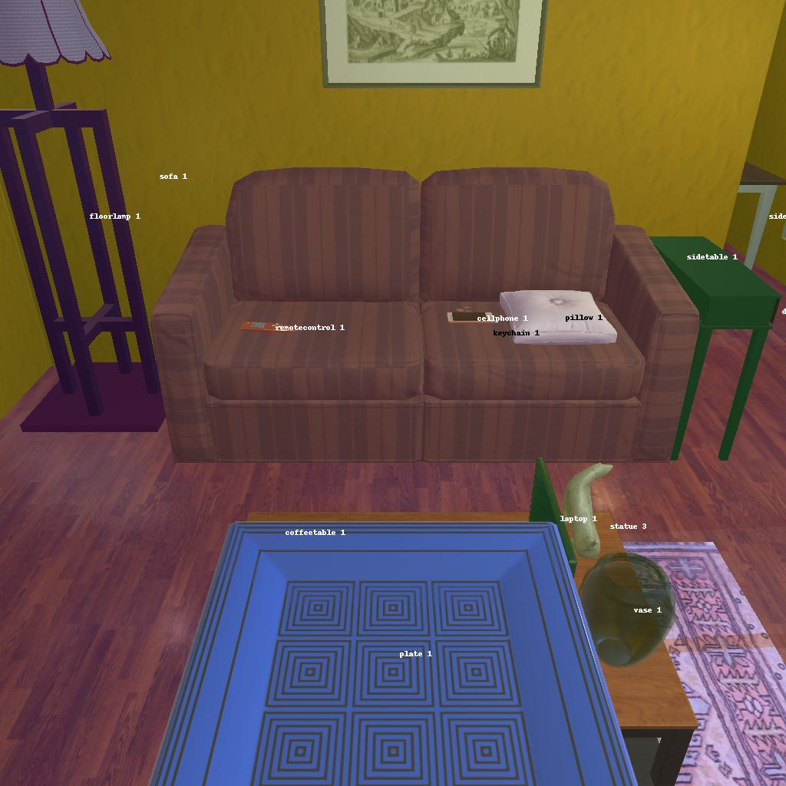

---------------------------------------------------------task: 3---------------------------------------------------------
--------------------------------------------------------------------------------------------------------------------------------------------------------------------
--------------------------------------------------------------------------------------------------------------------------------------------------------------------
Step:--------------------------------------------------------------------------16-------------------------------------------------------------------------------
----------------------------------------
VLM Prompt:
Image1:
Image2:
**Instruction**
1. Analyze the provided image to identify all visible household objects, focusing on those relevant to the task description "examine the plate with the floorlamp."
2. Use the analysis of the image and the task hint "The agent must find an object of the desired type, locate and turn on a light source with the desired object in-hand." to answer the question: what is the most reasonable action in the choices for the task description "examine the plate with the floorlamp"?
4. Decide and write the answer using the template: The answer is: (i): , where i is the real number. If there is no desired object in the image, search every place based on **Initial Observation** to find the object. And if no one is exactly correct, choose a similar answer.
**Initial Observation**
You are in the middle of a room. Looking quickly around you, you can see armchair (1), garbagecan (1), tvstand (1), shelf (1-5), sofa (1), coffeetable (1), sidetable (1-2), drawer (1)
**Answer Choices**
(1): go to armchair 1
(2): go to garbagecan 1
(3): go to tvstand 1
(4): go to shelf 1
(5): go to shelf 2
(6): go to sofa 1
(7): go to sidetable 1
(8): go to sidetable 2
(9): go to drawer 1
(10): go to shelf 3
(11): go to shelf 4
(12): go to shelf 5
(13): put plate 1 in/on coffeetable 1
(14): use floorlamp 1
(15): examine plate 1
**Answer**
Let's think step by step by following the instructions.
----------------------------------------
----------------------------------------
Original Response:
First, we need to identify all visible household objects relevant to the task description "examine the plate with the floorlamp." In the provided images, we can see the following objects:
- sofa 1
- floorlamp 1
- coffeetable 1
- plate 1
- sidetable 1
- statue 3
- vase 1
According to the task hint, the agent must find the plate (which is already on the coffeetable), locate and turn on a light source (which is the floorlamp) with the plate in hand. Therefore, the agent must first go to the coffeetable to get the plate and then use the floorlamp to examine the plate.
Based on the **Initial Observation** and the given answer choices, the most reasonable action to perform these steps is:
- Go to coffeetable 1 to get the plate (which is not an option in the answer choices)
- Use floorlamp 1 to turn on the light source
Since there is no option to go to the coffeetable, we will proceed with the next logical step, which is to use the floorlamp.
The answer is: (14): use floorlamp 1
----------------------------------------
----------------------------------------
>>> Refine Original VLM Response and Get Pure Action: use floorlamp 1
----------------------------------------
-----------------------------------------------------------------
Running time: 9.106580018997192 seconds
Total Money: 1.59583
-----------------------------------------------------------------
-----------------------------------------------------------------
Text Observation:Nothing happens.
-----------------------------------------------------------------
UNSUCCEED